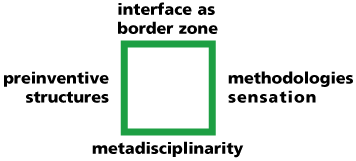
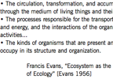
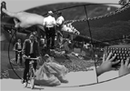

define
home
define
 Interface ecology addresses how to generate new knowledge by combining methods and their disciplines. Theory and practice are connected.
Interface ecologies are socio-technical border zones that juxtapose disparate systems on many levels. Interface border zones bring people, activities, codes, components, and systems into contact. They are characterized by the relationships that they enable and prohibit. The development of hybrid forms can be catalyzed (or prevented). The need to understand and resolve differences can function as a transformative mechanism that drives innovation (or as barrier).
publications
 Kerne, A.,
doing
interface ecology: the practice of metadisciplinarity, Proc
SIGGRAPH Art and Animation, 181-185 [20%].
http://dx.doi.org/10.1145/1086057.1086144
Kerne, A.,
doing
interface ecology: the practice of metadisciplinarity, Proc
SIGGRAPH Art and Animation, 181-185 [20%].
http://dx.doi.org/10.1145/1086057.1086144
 Kerne, A.,
Concept-Context-Design: A Creative Model for the Development of
Interactivity.
Proc ACM Creativity and Cognition 2002, 192-199 [48%].
http://dx.doi.org/10.1145/581710.581739
Kerne, A.,
Concept-Context-Design: A Creative Model for the Development of
Interactivity.
Proc ACM Creativity and Cognition 2002, 192-199 [48%].
http://dx.doi.org/10.1145/581710.581739

Kerne, A.,
Interface Ecosystem, the Fundamental Unit of Information Age Ecology.
Proc SIGGRAPH 2002: Art and Animation, 142-145 [19%].

Kerne, A.,
Cultural Representation in Interface Ecosystems Amendments to the interactions
Design Awards Criteria.
interactions. Jan - Feb 1998, 37-43
http://dx.doi.org/10.1145/268986.268991